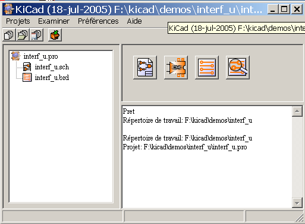

Kicad
Table
LINUX
Windows XP/2000
L'utilitaire kicad est un gestionnaire de projets qui facilite l'utilisation des différents logiciels nécessaires à la réalisation des schémas, circuits imprimés et au contrôle des fichiers de fabrication.
Les différents logiciels mis en jeu sont:
Eeschema: l'éditeur de schémas.
Pcbnew: l'éditeur de circuits imprimés.
Cvpcb: qui permet l'association aisée des composants schématiques et des modules physiques correspondants su le circuit imprimé.
Gerbview: le visualisateur de fichiers Gerber.
Se mettre en utilisateur root .
Copier le fichier kicad.tgz dans le répertoire /usr/local. On peut aussi utiliser le fichier kicad.zip (au prix d'un petit complément d'installation).
Exécuter la commande tar zxvf kicad.tgz (ou unzip kicad.zip). Le répertoire kicad et ses sous répertoires seront crées, et les fichiers copiés
Facultativement, modifier le fichier /etc/profile (ou autre fichier de config standart /usr/.profile, selon la distribution LINUX utilisée), pour ajouter à la ligne PATH le chemin des exécutables de Eeschema (/usr/local/kicad/linux). Ne pas utiliser de lien symbolique car Eeschema a besoin de connaître le chemin réel des exécutables pour y retrouver quelques fichiers complémentaires (configuration par défaut, fichiers d'aide en ligne...)
Eventuellement, ajuster les droits
d'accès. Par défaut les fichiers sont en accès
lecture (et exécution pour les exécutables) pour tous
et en lecture / écriture pour le propriétaire) Le
propriétaire est root.
Si l'on a utilisé
le ficher kicad.zip, il faudra rendre exécutables les
5 fichiers suivants
kicad, pcbnew, eeschema, cvpcb, gerbview
et l'editeur de texte wyoeditor dans le répertoire
kicad/linux (commande chmod +x kicad).
Eeschema utilise les touches de fonctions F1 à F4 (zooms).
Elles ne doivent pas être réaffectées.
Sous KDE, appeler le menu de configuration de KDE pour supprimer ces réaffectations, si les fonctions de Zoom sont inactives.
Remarques :
Toute modification de profile ou .profile nécessite de se « relogger » pour être prise en compte.
Sauvegarder la configuration ainsi modifiée dans /usr/local/kicad/template/kicad.pro
Il est plus que conseillé de donner au répertoire de travail et au projet le même nom.
|
exemple.pro |
|
|
exemple.sch |
|
|
exemple.brd |
|
|
exemple.net |
|
|
exemple.xxx |
|
|
exemple.cache.lib |
|

|
|
Appel à Eeschema |
|
|
Appel à Cvpcb. |
|
|
Appel à Pcbnew. |
|
|
Appel à Gerbview. |
|
|
|

|
Création du fichier de
configuration pour un nouveau projet. |
|
|
|
Ouverture d'un projet existant. |
|
|
Mise à jour du fichier de configuration courant. |
|
|
Créer une archive zippée du projet (fichiers schématiques, libraires, pcb, etc ...). |
Utilisation Page